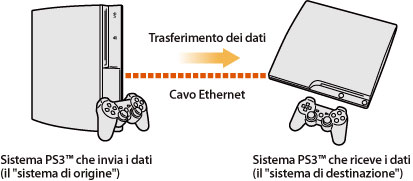
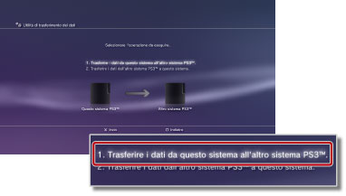
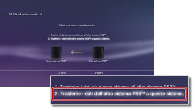

Impostazioni > Impostazioni del sistema > Utilità di trasferimento dei dati
Utilità di trasferimento dei dati
È ora possibile trasferire (copiare o spostare) i dati salvati sul disco rigido di un sistema PS3™ nel disco rigido di un altro sistema PS3™ utilizzando un cavo Ethernet.

Avvisi
- Quando si esegue tale operazione, tutti i dati memorizzati sul sistema PS3™ che riceve i dati (il "sistema di destinazione") vengono eliminati.
- I dati eliminati non possono essere ripristinati, prestare quindi attenzione a non eliminare per errore dati importanti. La perdita o il danneggiamento dei dati è responsabilità dell'utente.
- È possibile che alcuni tipi di dati non siano trasferibili. Selezionare qui per ulteriori informazioni.
Preparativi per il trasferimento dei dati tra sistemi
Prima di iniziare il trasferimento dei dati è necessario eseguire le seguenti operazioni.
1. |
Aggiornare il software di sistema di entrambi i sistemi PS3™ alla versione più recente. |
|---|---|
2. |
Preparare il sistema PS3™ che invierà i dati (il "sistema di origine"). |
- Se un utente non dispone di un account, creare un account PlayStation®Network.
- - Selezionare
 (PlayStation®Network) >
(PlayStation®Network) >  (Iscriviti al PlayStation®Network) e seguire le istruzioni sullo schermo per creare un account.
(Iscriviti al PlayStation®Network) e seguire le istruzioni sullo schermo per creare un account. - Disattivare il sistema PS3™ se i dati da trasferire contengono contenuti acquistati da PlayStation®Store.
- - Selezionare (PlayStation®Network) >
 (Gestione account) >
(Gestione account) >  (Attivazione sistema).
(Attivazione sistema). - Se si desidera trasferire le informazioni sui trofei, effettuare il backup ("sincronizzazione") delle informazioni sui trofei sul sistema PS3™ con il server PlayStation®Network.
- - Accedere a PlayStation®Network, quindi selezionare
 (Gioco) >
(Gioco) >  (Bacheca dei trofei).
(Bacheca dei trofei). - Se sono state ottenute delle ricompense da utilizzare in
 (PlayStation®Home) sul sistema di origine, accedere a (PlayStation®Home) prima di trasferire i dati.
(PlayStation®Home) sul sistema di origine, accedere a (PlayStation®Home) prima di trasferire i dati. - Effettuare il backup delle informazioni del profilo e delle fasi create in LittleBigPlanet™ sul gioco salvato. È possibile quindi utilizzare i dati di cui è stato effettuato il backup durante l'utilizzo di LittleBigPlanet™ sul sistema PS3™ di destinazione.
Avviso
Se si esegue il trasferimento dei dati senza aver creato un account PlayStation®Network, si applicano le seguenti restrizioni:
- È possibile che i dati salvati non siano utilizzabili sul sistema PS3™ di destinazione.
- È possibile che non si riesca più a ottenere dei trofei utilizzando i dati salvati che sono stati trasferiti.
- Le informazioni sui trofei non vengono trasferite.
Trasferimento dei dati
Spegnere entrambi i sistemi PS3™, quindi eseguire le seguenti operazioni. Se i dati trasferiti sono relativi a un gioco salvato protetto da copia o se i dati sono coperti da copyright, saranno spostati sul sistema PS3™ di destinazione e cancellati dal sistema PS3™ di origine.
1. |
Utilizzando un cavo Ethernet, collegare direttamente i due sistemi PS3™. |
|---|---|
2. |
Collegare i sistemi PS3™ a differenti connettori di ingresso video sul televisore. |
3. |
Accendere il televisore, quindi attivare i sistemi PS3™. |
4. |
Nel sistema PS3™ di origine, selezionare |
5. |
Selezionare [1. Trasferire i dati da questo sistema all'altro sistema PS3™.].  Se non sono state completate le operazioni preliminari descritte in precedenza, seguire le istruzioni sullo schermo per completare la procedura. |
6. |
Quando il sistema PS3™ è in attesa per iniziare il trasferimento dei dati, utilizzare il telecomando del televisore per passare all'ingresso video del sistema PS3™ di destinazione, in modo da visualizzarne la schermata. |
7. |
Nel sistema PS3™ di destinazione, selezionare |
8. |
Selezionare [2. Trasferire i dati dall'altro sistema PS3™ a questo sistema.].  Seguire le istruzioni sullo schermo per completare la procedura. |
 (Impostazioni) >
(Impostazioni) >  (Impostazioni del sistema) > [Utilità di trasferimento dei dati].
(Impostazioni del sistema) > [Utilità di trasferimento dei dati].Note
- Una volta completato il trasferimento dei dati, è possibile spegnere il sistema PS3™ di origine. Impostare il televisore in modo da visualizzare la schermata del sistema PS3™ di origine, quindi selezionare
 (Utenti) >
(Utenti) >  (Spegni sistema).
(Spegni sistema). - Se nel corso della procedura sono stati trasferiti contenuti scaricati da PlayStation®Store, è necessario attivare il sistema PS3™ di destinazione prima di poter utilizzare i dati. Effettuare il login al sistema PS3™ con l'utente in possesso dei contenuti, quindi selezionare (PlayStation®Network) > (Gestione account) > (Attivazione sistema) per attivare il sistema.
Limitazioni dell'utilità di trasferimento dei dati
Alcuni tipi di dati non possono essere trasferiti con l'utilità di trasferimento dei dati, mentre altri tipi di dati possono essere trasferiti ma non riprodotti sul sistema PS3™ di destinazione.
Per le informazioni più aggiornate, visitare il sito Web di SCE per la propria regione. I seguenti tipi di dati non sono trasferibili:
- Contenuti video scaricati a noleggio da PlayStation®Store (tipo di file: MNV)
- Brani (compresi "song packs") per il software SingStar™ che sono stati salvati sul disco rigido del sistema PS3™
- File video protetti da copyright (tipi di file: MGV e ETS)
- File video compatibili con il servizio DivX® VOD (video su richiesta)
Per i seguenti tipi di dati, è necessario eseguire dei passi supplementari una volta completato il trasferimento dei dati così da poter utilizzare i dati stessi:
- Dati di applicazione per Life with PlayStation®
- - Download e installazione dell'applicazione Life with PlayStation® sul sistema PS3™ di destinazione. È possibile continuare ad accumulare punti di contribuzione per il sistema di ranking PlayStation®Network del canale Folding@home™.
- GripShift™
- - Quando si inizia il gioco per la prima volta dopo il trasferimento dei dati, viene visualizzato un messaggio di errore che non consente di effettuare il gioco. Per giocare, scaricare e installare nuovamente il gioco.
- Dati salvati per Ghostbusters™ e Ghostbusters™: il videogioco
- - Il gioco salvato non viene riconosciuto quando si inizia il gioco per la prima volta dopo il trasferimento dei dati. Per utilizzare i dati salvati, uscire dal gioco, quindi avviare nuovamente il gioco.
Nota
Alcuni software potrebbero non essere disponibili per la vendita in certe regioni.